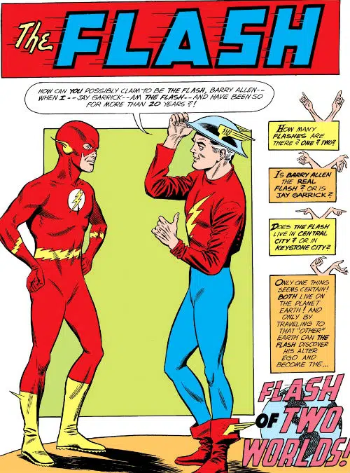
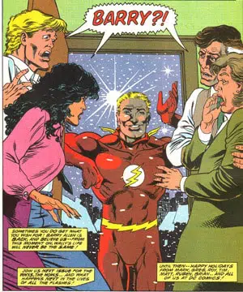
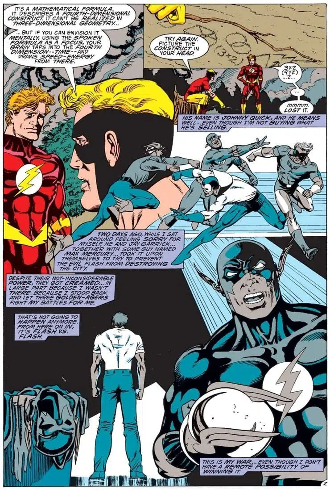
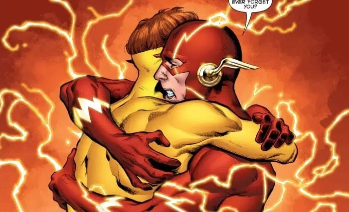
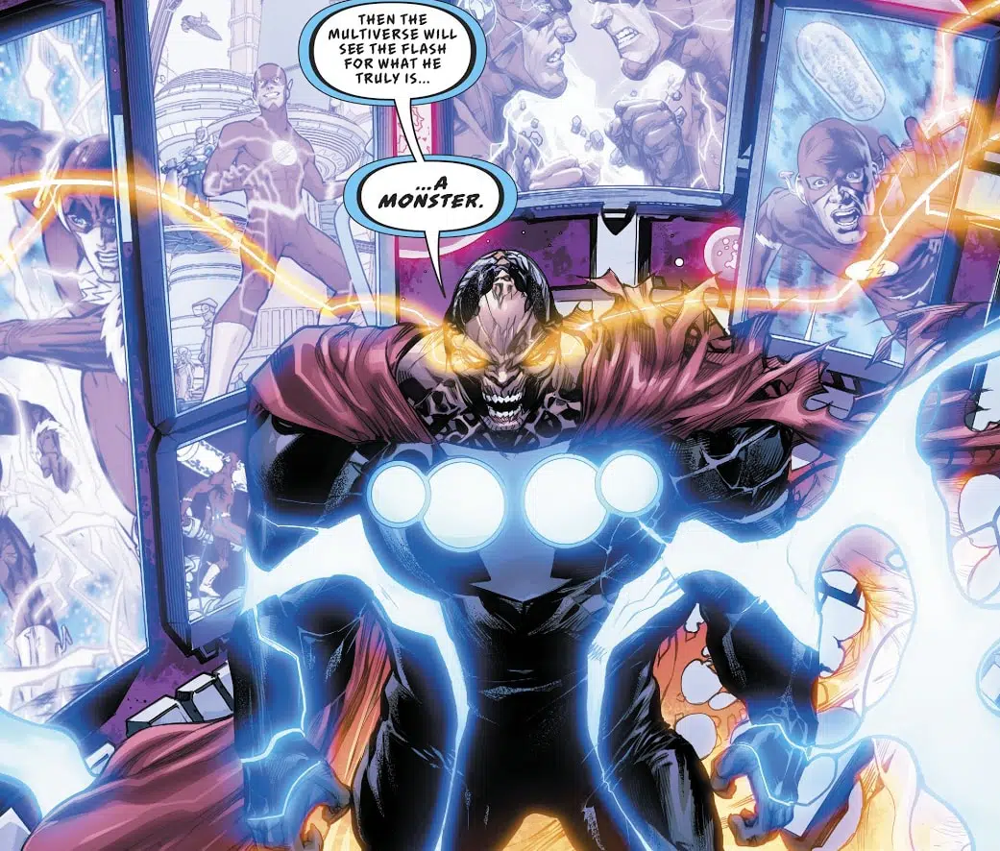

Em 1961, Gardner Fox criou a primeira história do herói que ele viaja para outro universo. Na trama Barry Allen se encontra com Jay Garrick pela primeira vez, e ficamos sabendo que os personagens são de Terras distintas. Ela é considerada uma das melhores histórias do Flash, e já foi lançada no Brasil em Coleção DC 70 Anos, pela Panini.
Escrita pelo mestre Mark Waid, o quadrinho de 1994 mostra a volta de Barry Allen. Para fazer Wally West ser aceito como o novo Velocista Escarlate, o escritor promove a volta de antigo herói. Ainda na trama vemos West começar a questionar as atitudes de seu mentor, e isso pode quase tudo a perder.
Em outra história de Waid, vemos Flash de Wally West Pós-Crise, a grande saga da DC Comics. O quadrinho é epílogo de O Retorno de Barry Allen e precursora do arco Velocidade Terminal. Além disso, na trama o herói faz grandes reflexões sobre as responsabilidades que vieram junto aos seus poderes.
O clássico one-shot do Flash de Geoff Johns, vemos uma grande história de Flash com a volta de Wally West. Como centro de toda trama, vemos o personagem no centro do eventos que o trouxeram de voltas aos quadrinhos da DC Comics.
Na trama vemos Paradoxo viajar pelo tempo, tentando assim apagar o Flash da existência. A história de Joshua Williamson, mostra diversos momentos clássicos do Flash em vários universos diferentes. E para derrotar o vilão, o herói pede ajuda a outro inimigo, Eobard Thawne o famoso Flash Reverso.
